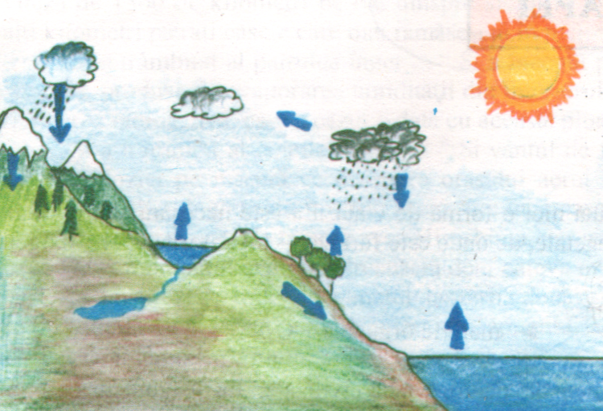

Apa. Poluarea apei
Apa în natură
Fără apă nu poate fi concepută nici o formă de viață. Ea este necesară atât omului și restului lumii animale cât și lumii vegetale, de unde este furnizat - tot datorită apei - oxigenul necesar respirației:
• Nevoia de apă dulce a omenirii crește an de an. Acum 100 de ani se utilizau 400 miliarde m³ apă/an, care a crescut la 8000 miliarde m³/an în 2015.
• Cu 350 de ani înaintea erei noastre, Aristotel a anticipat obținerea apei dulci din ocean. Metoda lui consta în așezarea unui burete deasupra unui cazan în care clocotea apa de mare. Acum se cunosc peste sute de metode de desalinizare, aplicate în America de Sud, America de Nord, Australia și o bună parte din Europa și Asia.
• Chiar dacă acoperă aproape trei sferturi din suprafața Pământului, apa reprezintă mai puțin de 7% din masa planetei.
Pământul dispune de aproximativ 1.400.000.000 km³ de apă (hidrosfera). Oceanul planetar reprezintă aproximativ 97,4% din acest volum, ghețurile polare și ghețarii în jur de 2%, iar restul, lacuri și mări interioare, râuri, fluvii, vapori atmosferici și umiditatea solului. Apa dulce totalizează aproximativ 36.000.000 km³, din care 75% se găsește în gheață și ghețari.
Hidrologii apreciază că apa ocupă aproximativ 71% din suprafața Pământului și că este inegal distribuită: în emisfera nordică uscatul reprezintă 41%, iar în cea sudică doar 10%.
De când s-a format hidrosfera, acum 3 miliarde de ani, cantitatea de apă nu a variat foarte mult. Aceasta se explică prin faptul că apa descrie în natură un circuit, în absența căruia biosfera nu ar mai exista.

Datorită circuitului său în natură, apa constituie o resursă care se reînnoiește permanent. Timpul petrecut în diferite faze ale ciclului variază foarte mult. Astfel, vaporii din atmosferă se reînnoiesc o dată la 8-10 zile, apele fluviilor au timpul mediu de reînnoire de 12 rile, iar lacurile și mările 500 de ani. Oceanele și ghețarii își reînnoiesc apa în mii de ani.
Proprietatile apel naturale
În natură, apa nu se găsește în stare pură. Datorită calităților sale excepționale de solvent, apa se găsește sub forma unei diversități de soluții. Apa mărilor și oceanelor conține cantități variabile de saruri ( 6g/l in Marea Baltică, 17,7g/l - din care 14g NaCl - în Marea Neagră, 44g/l în Marea Roșie).
Apele râurilor au compoziții variabile, în funcție de terenurile pe care le străbat, de sărurile și gazele pe câte le dizolvă și de climă. Apa de izvor este incoloră și are în general gust plăcut. Gustul uneori sălciu se datorează solubilității în cantitate mai mare a unor săruri (în special CaCl₂).
Nici apa de ploaie nu este peste tot la fel. Compoziția ei depinde de apropierea de mări și oceane, de vânturile întâlnite sau de poluarea atmosferei.
Dacă vrem să dovedim că apa naturală nu poate fi caracterizată printr-un set de proprietăți unice, trebuie să ținem cont și de formulele izotopice ale apei.
Hidrogenul are doi izotopi stabili ¹H și ²H (deuteriu), iar oxigenul trei: ¹⁶O, ¹⁷O și ¹⁸O.
Pentru apă putem scrie: ¹H₂¹⁶O, ²H¹⁶O; ¹H₂¹⁷O, ²H¹⁷O, ¹H₂¹⁸O. Dar hidrogenul mai are un izotop radioactiv ³H (hidrogenul supragreu sau tritriu ) iar oxigenul, doi izotopi radioactivi ¹⁴O, ¹⁵O, ¹⁹O.
Se mai pot scrie așadar încă 12 formule.
În natură, apa apare mai ales sub formă de apă obișnuită ¹H₂¹⁶O.
Apa grea (²H₂O sau D₂O) se găsește sub concentrației mai mare în adâncul oceanelor și în apa provenită din topirea ghețarilor.
Sub formă de apă supragrea (³H₂O sau T₂O), apare în procent foarte mic în apă de ploaie.
Gustul sărat amărui al apei de mare se datorează clorurii de natriu, sărurilor de magneziu (MgSO₄, MgBr₂, MgCl₂) și de calciu. În apa mării se găsesc:
| Substanța | mg/l |
|---|---|
| Cl⁻ | 19.000 |
| S (în SO₄²⁻) | 900 |
| Br⁻ | 65 |
| Sr²⁺ | 8 |
| Li⁺ | 0.2 |
| I⁻ | 0.05 |
| Na⁺ | 10.600 |
| Ca²⁺ | 400 |
| C(CO₂, HCO₃⁻) | 28 |
| B | 4.8 |
| N₂ | 0.8 |
| Rb | 0.12 |
| Ba²⁺ | 0.03 |
| Mg²⁺ | 1.300 |
| K⁺ | 380 |
| O₂ | 8 |
| Si | 3 |
| Ar | 0.6 |
| P | 0.07 |
Lecția anterioară Următoarea lecție